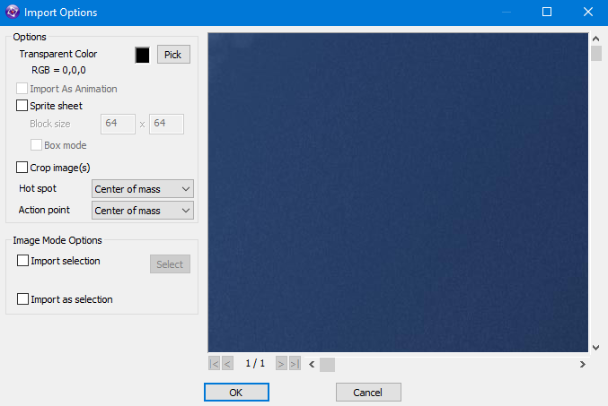

|
OK, so we have our empty world lets fill it with the things we need for our 3D Breakout game, but first we need to make that blue sky look more skylike. Just like you did with the engine and the camera add a Firefly Sky to the Frame. Don't worry about resizing it or where you put it as it will cover the whole of the inside of your world no matter where it is on the frame. There are 2 types of sky, a Skydome which uses 1 image and wraps it around a spherical sky, which although looks good has issues when you look straight up or straight down, there is also the second type of sky called a Skybox which uses 6 different images and places you inside a cubed sky which if the images are done correctly you can never tell is a cube. we will be setting up a skybox today as its by far the most popular and you can download premade skyboxes from many places on the internet mostly for free. we have provided you with one called tropical sunset by Heiko Irrgang, Based on a work at http://93i.de. To set each side texture of our skybox we need to find the skybox directory which is part of this tutorial (in the Tutorials\Firefly\Chocobreak3D subdirectory of Clickteam Fusion) and select the correct image for the correct direction |
||
| click this button next to Top, you will have to click in the space to show the button. | ||
| click the Import button at the top left of the image editor that opens up. | ||
| Navigate to the Skybox directory and then the TropicalSunnyDay directory and select the Top image and click Open. | ||
|  | ||
| You should now be seeing the Import Options these are all set by default so just select OK. | ||
| You are now back at the edit image window where you could add any extra touches but as we dont need to we can just select OK. | ||
| You should now see that the top image is displayed in a very small box in the Properties line. do the same thing for the other 5 positions of the sky using the correct images for the correct places, such as Left for left etc. | ||
| Click Run Frame like before and lets look at our wonderful skybox. | ||